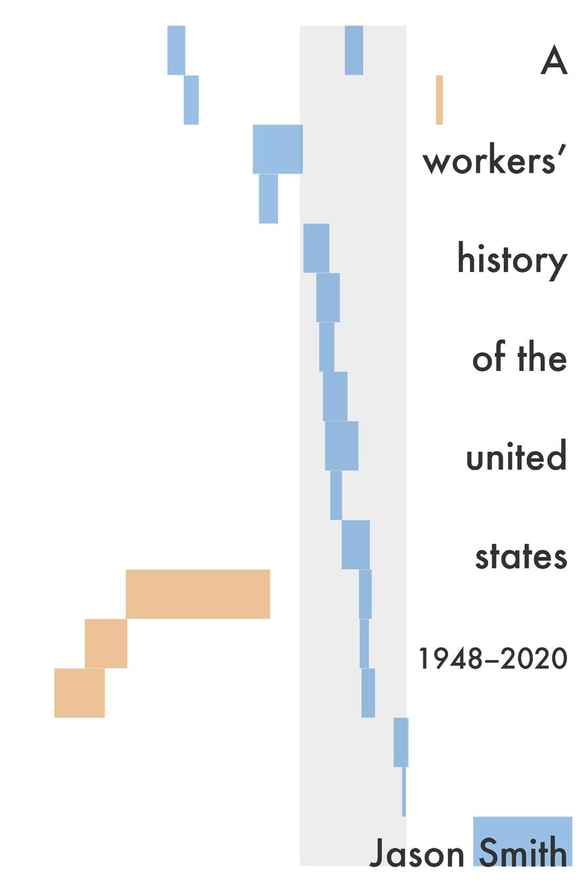

A Workers' History of the United States 1948-2020

Notes
The book is about 3 big narratives in the US: . Decline of unions led to stagnant wages and labor share . The financial deregulation lead to a great recession . Government Action towards money suppl and gold standard caused the Great Inflation in 1970s
F Roosevelt "We must lay hold of the fact that economic laws are not made by nature. They are made by human beings."
The book is a series of facts inconsistent with common mechanisms in economic theory for inflation and unemployment. Its main thesis is that inflation follows workers entering the workforce and goes hand in hand with economic growth.
The whole analysis is based on the Economic seismograms that the author has developed.
On the Great Inflation
p27- Monetary interpratation of economic history culminates in DSGE models that perform worse than assuming that timeseries are random.
p34 - The Solow paradox states that the productivity growth slowed down despite the IT revolution, even though it exploded with the five great inventions (electricity, urban sanitation, chemicals, pharmaceuticals, combustion engine and communications). The author suggests that while the great inventions allowed people to enter the workforce the IT revolution benefitted only people who were already in the workforce. The key lies in how the technology changes the labor force. The 1970s saw women get into the workforce, and thus household work (which wasn't counted in the GDP) transformed into something that was counted in the GDP.
p36 - Shock to monetary base and inflation expectations follows inflation itself caused by economic growth which causes more money to enter the economy.
p39 - A natural objection (which I had in my when reading the book) is that inflation was arguably also caused by the 1973 and 1979 surge in oil prices, which have nothing to do with previous economic growth. Indeed the biggest CPI peaks are directly associated with these surges BUT author bases his analysis on the core CPE where the price of energy is left out.
On the decline of unions
p57- There is a symmetry between unionization and income inequality, and this was already observed by Piketty.
On the great recession
p67 - Debt became a problem after the recession in 2008. The spread between job openings and hires increased before the crisis, after immigration inflow dropped.
p71- The author suggests that maybe there was no housing bubble as the house price index has the same structure as wage growth. The basic structure of the econmy makes housing progressively unaffordable, this is not necessarily a bubble.
TODO Check the Case-Schiller price index and the wage growth in the same period.
Conclusion
p81 - Managing an economy is about managing a society - its opportunities, its fears. Most of all, it’s about workers and their ability to work. The authors thinks that focusing on labor and employment helps better understand post-war economic history.
Economic growth and prices levels are correlated to the number of people in the labor force. Inequality seems to have little to do with economic growth.